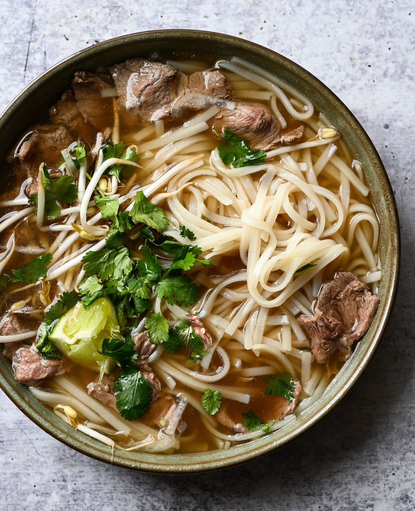

Updated 09/11/2023
ShareVietnamese cuisine is distinct and memorable. Typical Vietnamese food tastes salty, sweet, sour, and hot and is available from street vendors as well as high-end restaurants. Whether you're looking for a quick lunch in Hanoi or the greatest restaurants in Ho Chi Minh City, Vietnamese cuisine is some of the best in Southeast Asia, so there's no need to worry what the best food to eat in Vietnam is - we've got you covered.
I've separated the dishes into categories to assist manage this Vietnamese food guide. Because several traditional Vietnamese foods can fall into more than one category, I attempted to organize this list as best I could. To navigate to a specific part, click on a link.
1. Pho
Pho is a well-known example of traditional Vietnamese cuisine. It, like banh mi, is one of the most popular foods in Vietnam and is considered a national dish.Pho is a noodle soup that originated in the north of Vietnam but is now popular throughout the country. It's produced with four fundamental ingredients, regardless of where it comes from: clear stock, rice noodles (called banh pho), meat (usually beef or chicken), and herbs.Northern pho soup recipes include bigger rice noodles and a lot more green onions. Only vinegar, fish sauce, and chili sauce are commonly used as garnishes. Southern pho soup, on the other hand, has a sweeter broth and is topped with more fresh herbs and bean sprouts.
2. Banh Mi
Banh mi is a popular Vietnamese food, just like pho. Even if you don't know much about Vietnamese food or haven't been to Vietnam, you have probably heard of banh mi. It is a popular dish in Vietnam and can be found all over the country.
Simply put, "banh mi" is the Vietnamese term for a long, crusty bread called a baguette, brought to Vietnam by the French while they were colonizing the country. But when most people use the phrase "banh mi", they are talking about a particular type of sandwich made with a baguette, various types of meat, vegetables, and toppings.
Pork is often used in banh mi sandwiches and can come in different forms like paté, grilled patties, Vietnamese sausage, sliced meat, spread, and shredded. Some vegetables that are often used in banh mi sandwiches include sliced cucumbers, fresh coriander, pickled carrots, herbs, and shredded radish. However, you have the freedom to choose whatever ingredients you prefer for a banh mi sandwich, just like you would for any other sandwich. This means there are countless options, including duck, egg, grilled chicken, fish cake, and more.
The baguette is what makes the banh mi sandwich special, regardless of what ingredients you choose to put inside. They make it very crispy and crunchy on the outside, but soft and fluffy on the inside, so when you bite it, it falls apart. Banh mi is a very tasty food that I really love to eat in Vietnam.
3. Bun Cha
Bun Cha is a famous dish from Hanoi. You can find bun cha at food stands and street kitchens all over the city. The pork is cooked on a grill with charcoal and served with cold rice noodles, various veggies, and a soup.
This Vietnamese food is normally eaten for lunch. Some people compare it to meatballs or hamburgers, but we believe its unique combination of flavors sets it apart and makes it unlike anything else.
4. Com Tam
Com Tam is a popular dish in Ho Chi Minh City that you can find at street stands. It is quick and easy to make. Broken rice, which is made up of smaller rice pieces, is also known as Broken Rice. It used to be a snack made from leftover rice. Vietnamese people have made it into a famous snack that can be found on Ho Chi Minh street.
Com Tam is a dish that is commonly served with either grilled, steamed, or shredded pork. The pork is usually grilled, but sometimes fish or a fried egg can be served instead. And since this is Vietnamese food, it wouldn't be finished without adding some lime juice, fresh herbs, and spring onion.

5. Mi Quang
Mi Quang is a tasty and inexpensive noodle dish that is popular in Hanoi. Different places have different ingredients, but you can usually find a basic dish of meat noodles with things like tasty oils, fresh leaves, shrimp, peanuts, mint, and quail eggs added to it.
Hanoi street food offers an excellent dish called Mi Quang, which is a popular Vietnamese noodle dish. People often eat it for dinner. You will find yourself excitedly waiting to enjoy the turmeric-flavored bone broth, yellow noodles, and fragrant herbs on top.